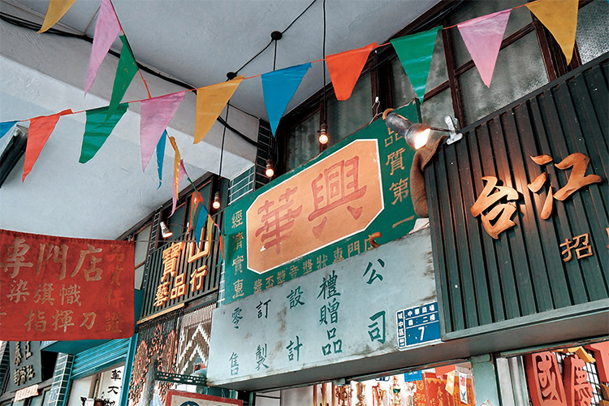

【記者陳品融、吳冠伶、廖澄妤綜合報導】火車聲劃破天際，矗立於鐵道旁的八棟樓熱鬧非凡。午後時分，父母牽著子女，情侶雙雙對對，放學後穿著制服的學生成群結伴，穿梭在唱片行、服飾店、各地餐館，流連於樓與樓、天橋與天橋間，歡聲笑語在狹小的空間裡沸騰著，直至天色暗下，華燈初上。
時光倒流回1970年代，這裡曾是老台北繁盛一時的重要地標：中華商場。
「如果有一個人可以穿越時空十分鐘，進去中華商場逛一圈，他大概會了解當時社會的人事物是什麼樣子。」文史工作者張哲生這樣描述。
從1961到1992年，歷經發跡、繁華、與衰敗，中華商場成就了台北西區的黃金時代。1992年因拆遷而消逝的這一幕幕畫面，多年後在作家吳明益的小說《天橋上的魔術師》重現，如今更因公視翻拍電視劇而鮮明了起來。
過去商場繁盛時期頗有代表性的店家，便是李大吉禮品店。作為上游批發商，李大吉在全盛時期共有13間店面，是當年全台禮品店的龍頭。1961年營業至今，走過近一甲子的起伏，也見證了中華商場的興衰。
中華商場位於台北西區的中華路上，沿鐵道而建，由忠、孝、仁、愛、信、義、和、平共八棟建築組成，棟與棟之間以天橋相連。 圖／文建會提供
中華商場發跡 父子兩代撐起禮品事業
西門捷運站旁一間店裡，陳舊的櫥窗上擺滿了各式各樣的獎座、紀念章，走近一瞧，天花板上妝點著五彩錦旗，讓整體空間更顯狹窄矮小。滿頭白髮的李宗興，便坐在這堆滿貨品的小店裡，和電話那頭的客戶討論著訂單。應對進退間的圓滑、幹練，不難讓人看出那長達半世紀的事業經營歷練。
1961年，中華商場落成，李宗興於同年呱呱墜地。身為李家長子的他，就此與李大吉禮品店結下一生之緣。
國共內戰後，李宗興的父親李溪安自山東逃難來台，落腳在中華路的鐵道旁，靠著擦皮鞋勉強維生。彼時的商場，不過是一整片違章棚戶，聚集了來自各地的難胞。為整治市容，省政府、警總、北市府等單位組成「中華商場整建委員會」，將棚屋拆除，並現地整建出八棟現代化樓房，命名為中華商場。李溪安以辛苦掙得的微薄積蓄購入一家店面，開啟了他的禮品事業。
李溪安賣命工作，並將所有資本集中挹注在中華商場，一點一滴，不斷擴大事業版圖。「中華商場大概最努力的就我爸了！」說這話時，李宗興圓滾滾的眼珠子張得好大，絲毫不掩對父親的崇拜與自豪。
他回憶，直到父親年邁生病前，他從未讓自己放過一天假。
李溪安甚至曾為每日營業額立下目標，「他今天沒有賣一萬塊不吃飯，他真的不吃飯。」為了達標，意志堅定的他，甚至營業到凌晨一點才肯打烊。
艱困環境中求生 七〇年代終熬出頭
回憶起童年時商場內的生活，李宗興說，一間2.5坪大的店面，底下是營業場所，上頭還有間小閣樓，存放著貨品和一家七口的作息起居（也難怪如今在西門町的店鋪，李宗興處得安然自得，毫不在意那低矮空間帶來的壓迫感）。此外，店內沒有廁所，男女老幼如需「方便」一下，都得投靠外頭的公廁；若在寒冷的冬夜，這樣的出門「方便」，則一點都不方便了。
另一方面，商場內亦無現代化的淋浴設備，洗澡這檔事自然不如現在舒適。早年，居民除了前往鄰近的公共澡堂，便是拿個大臉盆，在家門口就地盥洗。小孩子光著上身，只穿條小褲子；結束一整天的勞碌後，男人們也會吆喝著左右鄰居：「欸！來洗澡！」七、八個大男人圍在一起，邊洗邊聊天，「今天生意怎麼樣？」、「我後背癢，幫我抓一下。」在居住品質僅勉強算得上「堪住」的地方，住戶間彼此的交流互助，在這平凡的日常中構成了一幅幅幸福光景。
1970年代，中華商場沿路開始設起了公車站牌，同一時期，台灣正值經濟起飛，搭上雙重順風車的李大吉禮品行，生意蒸蒸日上。全盛時期，商場內共有四、五十家禮品行，作為上游批發商的李大吉，甚至拓展到十三家店面，雇用十幾位員工，來客絡繹不絕。
當時還是小孩的李宗興，騎著鐵馬，小小的身軀要使勁往前壓，或是在車頭也掛上貨物，才不致失去平衡而摔跤。他每日可幫忙送貨達七、八次，生意之興隆，可想而知。
「今天要發員工薪水，不用準備預備金，早上賣一賣晚上就可以發。」李宗興不諱言，以前一天營業額約為現在的十倍。
全盛時期，中華商場的生意究竟有多好？李宗興回答，有時店家忙到連吃飯、喝水都來不及。他談起往事，彷彿歷歷在目。 圖／廖澄妤攝
食衣住行通通包 商場仍難逃拆遷命運
除了禮品行，商場內也有販售珠寶、古玩、服飾、雜貨、唱片、電器等商家，可說包辦所有民生需要，應有盡有。
「它不只是台北市，是當時整個社會的縮影。」張哲生觀察。
中華商場不僅匯集台北人的食衣住行，更是許多中南部人對台北的第一印象。北上的火車進入台北車站前，會先經過中華商場。夜裡，來自中南部的乘客，半夢半醒間看到連棟建築物上閃爍的霓虹燈，就知道台北到了。
當時誰都沒想到，交通位置竟也成為商場被拆除的原因之一。
1980年代，中華路附近陸續進行鐵路地下化、興建捷運等工程，而捷運正好通過商場下方，需挖開中華路以縮短工程時間。
不只如此，20年來，台灣社會不斷進步，經濟也持續成長，急就章蓋起的中華商場，在80年代已略顯老舊、落伍。再加上商場租戶的租約早於1981年到期，台北市政府便動了拆除念頭。
為了中華商場的產權爭議，商戶們與財政局還鬧上法庭，最後在前台北市長黃大洲任內，確定由市政府勝訴。
這八棟北台灣的指摽建築，終究難逃拆除命運。
談起這段過去，李宗興嘆了口氣，說：「拆除的時候大家怨聲載道，每一個人都難過，畢竟一輩子的心血都在那裡。」
前台北市長黃大洲於任內確定拆除中華商場，店家與住戶在商場內掛上「市長豬心」、「為保衛家園而戰」、「先安置後拆除」、「我們誓與中華商場共存亡」等布條抗議。 圖／張哲生提供
食衣住行通通包 商場仍難逃拆遷命李大吉不滿配套措施 搬遷後生意慘淡運
1986年，商場所在的延華里、龍華里里長成立中華商場整理整建委員會，帶領抗爭。李宗興回憶，當時大家無所不用其極，憑著滿腔熱血對抗政府，爭取就地合法化。台北市議員開會時，甚至有抗議人士，作勢從議場二樓的觀眾席往下跳，導致觀眾席後來加蓋防護玻璃。
「那玻璃是中華商場搞出來的！」說起這項「功績」，李宗興得意地大笑起來，但語氣隨即一轉，感嘆過去大家什麼都不懂、缺乏法律相關知識，「抗爭也沒有用啊，政府政策下來，你也爭不過他。」
李宗興原先也有加入委員會，但後來身體欠安，便沒有持續積極參與。他回憶道：「拆除當天我沒在現場，但很多人都哭得要死。還有一個老頭看著電視機，氣起來，『啪——』把電視機都打破了。」
張哲生也還記得，拆除時很多人還留在商場內，不肯離開，有個老先生甚至是被警察抬出來的。
對店家、住戶而言，中華商場不只是個賣東西的地方，更是他們居住了幾十年、充滿回憶的家。
商場拆除時，每戶租戶可領到50萬元救濟金，並選擇安置到地下街，或優先配售國宅。「政府這樣做，真的不是很好。」李宗興搖了搖頭抱怨道。他認為，這些措施都不夠完善，尤其是安置計畫還未完成，政府就先將商場拆除，店家幾年後好不容易等到安置，長期累積下來的客源，早就斷了。
張哲生也認為，應仿照如今南門市場拆除的模式，先讓店家暫時搬進中繼商場營業。
至於優先配售國宅，李宗興指出，國宅畢竟還是要花錢買，「開玩笑，（商場）拆掉都沒有生意了，還有錢買嗎？」
兩個選擇間，李溪安挑了地下街，但那邊的店面如今都已出租。他早在商場拆除前就先買下新店面，新的李大吉，便在漢中街持續營業至今。
1992年10月20日，市政府正式拆除中華商場。李宗興永遠忘不了，那年，他一當完兵回來，便忙著搬店面。懷孕的妻子，甚至還因此操勞到流產。
遷至漢中街的第一個月，李大吉只接到一筆50元的生意，父親拿了個銅板給李宗興看，說道：「我們完了！」回憶當時，他激動地問：「50塊怎麼活？」店面搬遷的過程中，接不了訂單，好不容易安頓下來，也需一個個把老客人找回來，再慢慢增加新客戶，花了七、八年，才終於養成新客源。
即便在最慘淡的時期，李大吉也沒有停業或改做其他生意。李宗興說：「改行也不知道要改什麼，當然就是繼續做。」
遇到逆境怎麼辦？如今他以一副沒什麼大不了的語氣回答：「想辦法嘛。」客戶其實都還在，只是要設法把他們找回來、告訴他們：「我在這裡。」
電視劇復刻舊時歲月 商場永留世人心中
如今事過境遷，當年的商家與住戶也已在新的歸宿安頓下來，然而中華商場於他們而言，仍是心裡的遺憾。
畢竟，抗爭行動長達七、八年，拆遷卻是一夕之間。
「沒有人想過中華商場會被拆掉。大家覺得它就是永遠都會在那個地方，以後還會帶孫子來逛。」張哲生憶起令他魂牽夢縈的童年回憶，止不住語氣中的惋惜。「商場是在它還不想消失的時候被迫消失，這樣的東西更讓人懷念。」
曾經住在中華商場、現為台北地下街行政服務中心理事主席的盧寶鐘談起過往，也難掩不捨之情。當年因出外求學而未能參與抗爭行動的她，是在一次出差轉機過程中得知噩耗。
「我出差回來時在香港轉機，看到台灣的報紙上寫：昨天已將中華商場拆除。」她的臉上，早已經全是淚水，「那個剎那，坐在飛機上，眼淚就掉下來了，畢竟是自己成長的地方。」
中華商場一間間房子裡都住著不同故事，許多人過去的影子影影綽綽，昨日的悲與喜也彷彿還在那停留。
28年後的今日，電視劇《天橋上的魔術師》復刻了整棟中華商場，逼真的場景喚醒許多人心中失落的記憶。但片場終究是片場，經不起風吹雨打，更無法承受人來人往，最終也難逃戲劇拍攝後被拆除的命運。
張哲生嘆道，「感覺是這輩子第二次和中華商場道別。」
感嘆之餘，也不免擔憂城市記憶將留下空缺。他強調，近代歷史往往在不知不覺中消逝，卻最容易被忽視，當老一輩逐漸凋零，物品與記憶的保存也將越來越困難。
如今有電視劇作為契機，政府與民間或許能藉這次經驗，集結更多照片、文物，攜手規劃一座永續經營的園區。

天橋上的魔術師》片場一隅，以李大吉為雛形所設計的「華興獎盃獎章獎狀專賣店」，其中許多道具由李大吉出借。 圖／老屋顏提供
重建實體場景有其難度，以數位化保存便是另一條出路。
自2018年起，文化部開始推動「國家文化記憶庫計畫」，由各民間團體提案申請，進行相關主題的徵集與紀錄，並將資料保存在記憶庫網站上，授權給大眾使用。
截至目前已有110多個民間團體獲得補助，「追尋天橋上的時光：中華商場與台北庶民生活記憶1961-1992」便是其中之一。「從認識自己開始，也包括認識自己的所在地，有了這些文化的認同，也才會有民族自信。」國家文化記憶庫計畫主持人羅慧如表示。他也期許，未來能有更多相關學術研究、民間創作能以徵集資料為題材，讓常民記憶能延續下去。
「我覺得過去就過去了。」李宗興說。「但這部戲（指《天橋上的魔術師》）的好處是，過了二、三十年，我還是可以看到中華商場這個場景。」
回到日常，生活還是一步步地向前，偶爾想起短短31年的黃金時光，想起在耳邊迴盪著的嘻笑吵鬧聲，想起在商場上演著的人生百態、繁華興衰。哪怕實體場景消失了，李宗興和許多人仍將過去記憶細細收藏，那些舊時歲月，他們都曉得，也都記得。

吳冠伶
千禧年生於打狗，貓空寄居中，政大新聞系三年級。喜歡打狗大於貓空，喜歡貓貓狗狗，但貓貓大於狗狗。